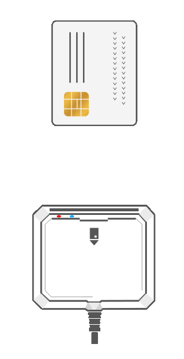

Bienvenido
Gracias por instalar BAC Firma de BAC|CREDOMATIC. Antes de empezar a utilizar el BAC Firma, queremos validar que la instalación fue exitosa.
Por favor haga clic en "Iniciar validación" y siga las instrucciones de cada paso
Paso 1 de 2 - Validación de BAC Firma
Por favor conecte su lectora de tarjetas e introduzca su firma digital y haga clic en el botón de validar

Paso 2 de 2 - Validación de firma digital
Por favor no desconecte su dispositivo lector o tarjeta, validaremos que podemos acceder a su firma digital.
Tome en cuenta que se le solicitará el pin de su tarjeta.
Aceptar y continuar
Error
Parece que algo no fue bien en la instalación o configuración. Por favor contacte a soporte técnico
Intentar de nuevoEl proceso de validación ha sido exitoso, gracias por instalar BAC Firma.
Puede cerrar esta pestaña del navegador.